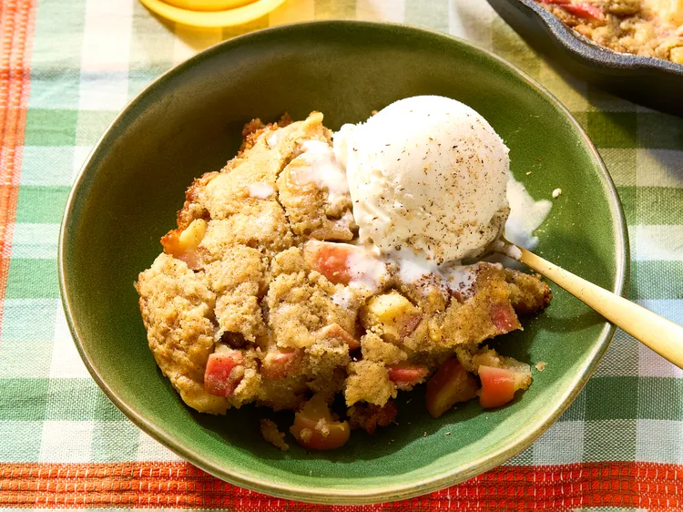

Cake

Description
Apple cinnamon spoon cake is really easy to make and is full
of fall flavors. Everything is cooked in one pan. Serve apple-cinnamon
cake while still warm with vanilla ice cream.
Ingredients
- 3 cups Honeycrisp apples, cored and diced
- 3 tablespoons white sugar
- 1 1/4 teaspoons cinnamon, divided
- 1/8 teaspoon nutmeg
- 1/2 cup unsalted butter
- 1 1/2 cups all purpose flour
- 1/4 cup packed brown sugar
- 1/4 cup white sugar
- 1/2 teaspoon baking powder
- 1/2 teaspoon baking soda
- 1/2 teaspoon salt
- 1 cup buttermilk
- 1 teaspoon vanilla extract
- vanilla ice cream for serving (optional)
Steps
- Gather all ingredients.
- Preheat the oven to 350 degrees F (175 degrees C).
-
Combine apples, 3 tablespoons white sugar, 1/4 teaspoon cinnamon,
and nutmeg in a bowl. Toss to combine. Let sit for 10 minutes.
-
Melt butter in a 10-inch ovengoing skillet over medium heat.
Add apple mixture and cook until tender, about 5 minutes.
Remove apples from skillet and set aside.
-
Remove skillet from heat. Whisk together flour, brown sugar,
1/4 cup white sugar, baking powder, baking soda, salt, and
remaining 1 teaspoon cinnamon in the skillet. Add buttermilk
and vanilla to the mixture. Stir until no lumps of flour remain.
-
Gently spoon in apple mixture and any additional juices.
Gently swirl into the batter - the apples should be lightly
folded into the mixture, so make sure not to overmix.
-
Place skillet into the oven and bake in the preheated oven
until barely set, 25 to 30 minutes. Cool for 5 minutes.
Serve with vanilla ice cream.
Home